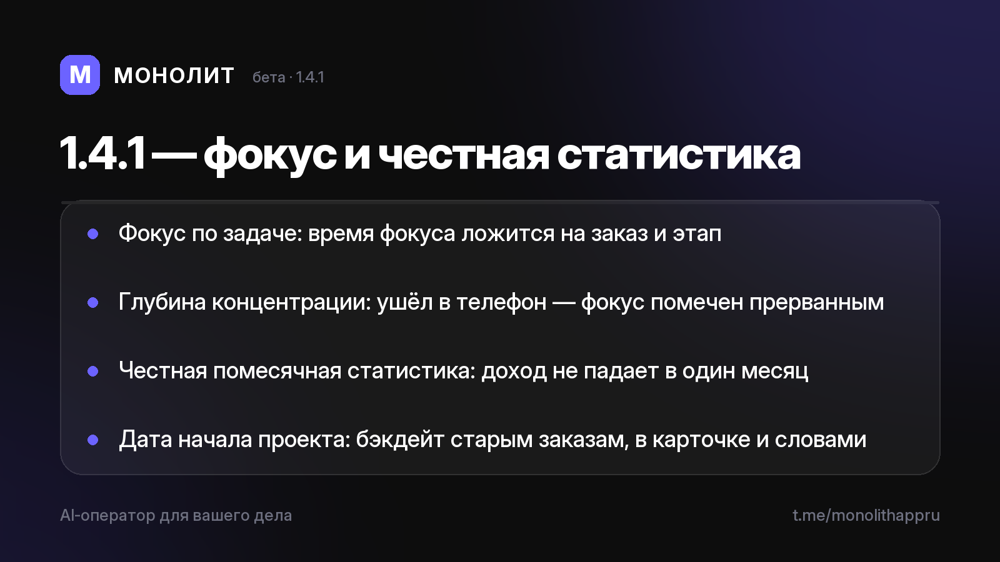

Дневник разработки · 09.07.2026
Фокус и честная статистика (1.4.1 beta)

Новая бета 1.4.1 🎯📊
Продолжаем про время и деньги — теперь про фокус на деле и честную помесячную картину.
Фокус по задаче
Режим фокуса (полноэкранный таймер глубокой работы) теперь запускается прямо из карточки заказа. Отработанное время ложится на проект и его этап — видно во «Времени над заказом» и разбивке «По этапам», а не только в личной статистике.
Глубина концентрации
Ушёл в телефон во время фокуса — приложение это заметит. Таймер не прерываем, но честно считаем срывы: «фокус прерывался N раз — вернись в глубину». Без наказаний, просто зеркало твоей концентрации.
Честная помесячная статистика
Долгий проект (например, кино на год за миллион) больше не «зарабатывает миллион в один месяц». Доход признаётся равномерно по месяцам работы — статистика и прогноз показывают реальную картину. Дату начала можно поставить или сдвинуть в прошлое: в карточке или словами ассистенту — «проект начался в сентябре».
Приватность прежняя: сервер видит только зашифрованные данные, ключ остаётся у тебя.
Бета — в личку по запросу, бесплатно. Приложение в RuStore (1.4.0 на модерации). Вопросы — @sbphotoshoter.
МОНОЛИТ — учёт заказов, клиентов и денег одной фразой. Windows и Android, бесплатная бета.
Скачать Читать канал